무선설비산업기사 (2002-03-10 기출문제)
1과목: 디지털 전자회로
1. SSB(Single Side Band)에 관한 설명 중 맞는 것은 ?
- LSB와 USB로 구성된다.
- 전력 손실이 높다.
- 점유주파수 대폭이 반으로 줄어들고, 전력소모도 훨씬 적어진다.
- DSB에 비하여 진폭이 2배로 늘어난다.
(정답률: 58%)

2. 그림과 같이 1[㏀]의 저항과 실리콘(Si)다이오드의 직렬회로에서 다이오드 양단의 전압은 얼마인가 ?
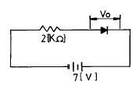
- 0[V]
- 1[V]
- 5[V]
- 7[V]
(정답률: 48%)
3. 다음 논리식은 무슨 법칙을 활용하여 전개한 것인가?
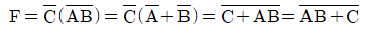
- 보수와 병렬의 법칙
- 드몰간(De Morgan)의 법칙
- 교차와 병렬의 법칙
- 적(積)과 화(和)의 분배의 법칙
(정답률: 알수없음)
4. 동조형 증폭기에서 공진주파수 fo, 주파수 대역폭 B, 코일의 Q 와의 관계를 설명한 것중 맞는 것은 ?
- B 와 fo 는 비례한다.
- Q 와 fo 는 반비례한다.
- Q 와 fo 의 자승에 비례한다.
- Q 는 B 의 자승에 비례한다.
(정답률: 25%)
5. 그림과 같은 회로에 입력 Vi가 인가되었을 때 출력은 어느 것이 가장 적당한가 ?
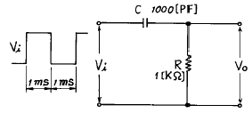
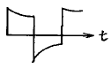
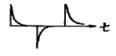
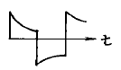
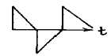
(정답률: 90%)
6. 그림과 같은 회로의 입력에 계단전압(step voltage)을 인가할 때 출력에는 어떤 파형의 전압이 나타나는가 ? (단, A는 이상적인 연산증폭기이다.)
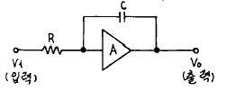
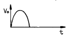
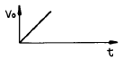
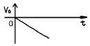
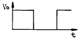
(정답률: 22%)
7. 배타 OR(Exclusive OR)회로의 논리식으로 잘못된 것은 ?
- Y = AB+AB
- Y = (A+B)(AB)
- Y = AB
- Y = (A+B)(A+B)
(정답률: 55%)
8. 그림의 궤환 증폭기에서 C를 제거하면 어떤 현상이 일어나는가 ?
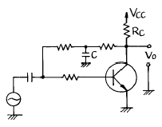
- 이득이 감소한다.
- 이득이 증가한다.
- 발진이 일어난다.
- 안정도가 향상된다.
(정답률: 54%)
9. 에미터 접지 트랜지스터 스위칭 회로에서 베이스와 에미터를 단락시키면 출력상태는 ?
- 즉시 파괴된다.
- ON 상태가 된다.
- OFF 상태가 된다.
- ON 상태도 OFF 상태도 아니다.
(정답률: 알수없음)
10. 다음 3변수 논리식을 간단히 하면 ?
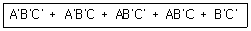
- A
- B
- B'
- C
(정답률: 60%)
11. 바크하우젠의 발진조건에서 증폭기의 증폭도 A=100 이고, 귀환회로의 귀환비율을 β 라고 할 때 귀환비율 β 값은 ?
- 10
- 1
- 0.1
- 0.01
(정답률: 67%)
12. 입출력장치를 마이크로컴퓨터에 연결하는 데에 필요한 특수한 장치는 ?
- 인터페이스(interface)회로
- 레지스터(register)회로
- 누산기(accumulator)회로
- 계수기(counter)회로
(정답률: 알수없음)
13. TTL(Transistor-Transistor Logic)의 특징을 설명한 것으로 틀린 것은 ?
- Fan - out를 많이 할수 있다.
- 논리회로중 응답속도가 가장 늦다.
- 출력 임피이던스가 낮다.
- 잡음 여유도가 낮다.
(정답률: 59%)
14. JK F/F(flip-flop)의 2개의 입력이 똑같이 1이고, 클럭펄스가 계속 들어오면 출력은 어떤상태가 되는가 ?
- Set
- Reset
- Toggle
- 동작불능
(정답률: 82%)
15. S-R Flip-Flop 을 J-K Flip-Flop으로 바꾸려고 할 때 필요한 게이트는?
- 2개의 AND 게이트
- 2개의 OR 게이트
- 2개의 NAND 게이트
- 2개의 Ex-OR 게이트
(정답률: 53%)
16. 어느 반송파를 정현파 신호에 의하여 100[%] 진폭변조하였을 때 피변조파 출력전력 Pm과 반송파 전력 Pc와의 관계는 ?
- Pm = PC
- Pm =3/2PC
- Pm = 2PC
- Pm = 3PC
(정답률: 54%)
17. 트랜지스터의 증폭기의 입력전력이 4[㎽]이고, 출력전력이 8[W]일 때 이 증폭기의 전력이득은 ?
- 20[㏈]
- 33[㏈]
- 65[㏈]
- 85[㏈]
(정답률: 73%)
18. 그림과 같은 연산 증폭기의 증폭도는? (단, Ri =∞, AV =∞)
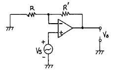
- -R/R'
- -R'/R
- (R + R')/R
- R/(R + R')
(정답률: 28%)
19. 다음 회로에서 Vi - Vo 특성곡선을 올바르게 나타낸 것은 ?
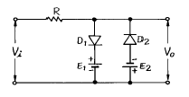
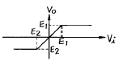
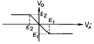
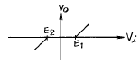
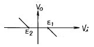
(정답률: 31%)
20. CR 발진기의 설명으로 옳은 것은?
- 부성저항 특성을 이용한 발진기이다.
- C 및 R로써 정궤환에 의한 발진기이다.
- 압전효과에 의한 발진기이다.
- 부궤환에 의한 비정현파 발진기이다.
(정답률: 62%)
2과목: 무선통신 기기
21. 연축전지의 취급상 주의할 점에서 틀리는 사항은 ?
- 충전할때 축전지의 전극에서 가스가 발생하는 상태에 주의해야 한다.
- 규정된 방전율 이상 방전하지 말아야 한다.
- 침전물이 극단하부 또는 측면에 쌓여 단락이 되지 않게 주의하여야 한다.
- 전해액 면은 언젠나 극판 밑에 차있게 한다.
(정답률: 알수없음)
22. 단일 리액턴스관(Reactance tube)방식으로서 최대 주파수편이 30[㎑]를 얻으려면 얼마로 체배하여야 하는가 ? (단,음성 주파수 범위는 30 ∼ 3000[㎐]이고, 이 리액턴스관의 직선범위는 0.33[㎭]이다.)
- 10체배
- 20체배
- 30체배
- 40체배
(정답률: 40%)
23. 주파수 변조 통신 방식에서 프리 엠파시스(pre-emphasis)를 쓰는 목적은 ?
- 음질 개선
- 잡음 감소
- 점유 대역폭 축소
- 검파감도 향상
(정답률: 10%)
24. 다음 중 위성의 다원접속 방법에 해당되지 않는 것은?
- WDMA
- CDMA
- FDMA
- SDMA
(정답률: 50%)
25. SSB수신기의 구성이 DSB수신기의 구성과 다른 점은 다음과 같다. 잘못된 것은 ?
- 복조하기 위하여 평형 변조기를 사용한다.
- 조정을 용이하게 하기 위한 스피치 클라이파이어(speech clarifier)가 있다.
- 국부 발진기가 사용된다.
- 통과 대역폭이 좁은 필터(filter)를 사용한다.
(정답률: 알수없음)
26. 오실로스코프로 변조도를 측정한 결과 파형이 그림과 같다고 한다. 이때 변조도는 ?
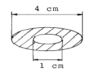
- 50 %
- 60 %
- 70 %
- 80 %
(정답률: 37%)
27. 필터가 없는 단상 브리지 정류회로에서 평균 직류 출력전압이 5[Ω]의 부하에 10[V] 이었다고 한다. 정류용 변압기 2차 측에 필요한 최대치 전압은 ?
- 4π [V]
- 5π [V]
- 10π [V]
- 12π [V]
(정답률: 43%)
28. 다음중 FM송신기와 관계가 없는 것은 ?
- IDC회로
- 위상변조
- pre - emphasis회로
- squelch회로
(정답률: 37%)
29. 컬렉터 변조식 변조도가 60[%],피변조기의 컬렉터 손실이 200[W],컬렉터 효율이 70[%]일때 반송파 전력은 ?
- 650[W]
- 396[W]
- 200[W]
- 160[W]
(정답률: 69%)
30. 다음 중 급전선 등 전송선로의 정합상태의 양부를 나타내는 것은?
- 정재파비
- 임피던스 정합
- 스미드 도표
- 특성 임피던스
(정답률: 55%)
31. FM 수신기 복조기에서 Foster - Seely 형과 Ratio - Detector 형에서 검파감도의 비는 ?
- 1 : 1
- 2 : 1
- 1 : 2
- 4 : 1
(정답률: 67%)
32. CDMA 셀룰러 및 PCS 이동통신에서 특정 기지국에 가입자가 증가되면 어떤 현상이 발생될 수 있는가?
- 전화 음질(품질)이 떨어진다.
- 안테나 이득이 증가된다.
- 음성 데이타 용량이 늘어난다.
- 변화없이 운용될 수 있다.
(정답률: 77%)
33. 위성 중계기에서 잡음의 영향을 최소화하기 위해서 저잡음 증폭기에 사용되는 소자는?
- MASER
- HPA
- SSPA
- GaAsFET
(정답률: 64%)
34. 무선 송신기와 안테나의 결합회로중 π 형 결합 방식의 특징으로 옳지 않은 것은?
- 고조파 발사가 효과적으로 증가한다.
- 정합회로 구성이 용이하다.
- 조정이 간단하다.
- 비교적 넓은 주파수대를 이용할 수 있다.
(정답률: 30%)
35. 단파 수신기에서 페이딩(Fading)에 의한 수신전계 강도 변화에 의한 수신기 감도를 안정시키기 위한 회로는?
- 자동주파수 제어회로 (AFC)
- 자동이득 조정회로 (AGC)
- 자동잡음 제어회로 (ANL)
- 자동전력 제어회로 (APC)
(정답률: 알수없음)
36. 통신에서 기저대역 필터의 사용목적으로 옳은 것은 ?
- 신호를 정해진 대역폭으로 제한하여 송신하고 심볼간 간섭을 제거하기 위하여
- 불규칙적인 잡음을 제거하기 위하여
- 대역제한과는 관계없이 심볼간 간섭을 제거하기 위해
- 아날로그필터로만 구현하여 부피를 적게하기 위해
(정답률: 67%)
37. 그림은 FM수신기의 리미터 특성을 측정하기 위한 구성도와 전압계로 입력과 출력단의 전압을 측정한 경우의 E1- E2 관계특성을 보이고 있다. 리미터의 적합한 특성은?
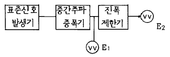
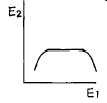
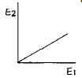
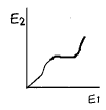
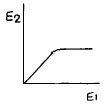
(정답률: 62%)
38. AM수신기에서 중간 주파수가 필요한 가장 큰 이유는?
- 잡음을 막기 위함이다.
- 자동이득회로를 걸기 위함이다.
- 높은 주파수는 충분한 증폭이 어렵기 때문이다.
- spurious발사를 작게하기 위함이다.
(정답률: 알수없음)
39. 송ㆍ수신기용 발진기로서 적당하지 않은 조건은 ?
- 주파수 안정도가 낮을 것
- 발진출력 변화가 적을 것
- 고조파 발생이 적을 것
- 부하 변동에 의한 영향이 적을 것
(정답률: 알수없음)
40. 수신기에서 증폭도와 내부잡음에 의하여 영향을 가장 많이 받는 것은 ?
- 감도특성 측정
- 선택도의 측정
- 충실도의 측정
- 안정도의 측정
(정답률: 10%)
3과목: 안테나 개론
41. 안테나의 빔(Beam)폭에 관한 설명으로 옳은 것은?
- 복사전계가 최대 복사전계강도의 1/2이 되는 두 방향 사이각
- 복사전력밀도가 최대 복사방향의 1/2이 되는 두 방향 사이각
- 복사전계가 0이 되는 두 방향사이각
- 최대복사방향을 중심으로 총복사 전력의 90(%)를 포함하는 범위의 사이각
(정답률: 70%)
42. 정재파를 설명하는데 옳지 못한 것은?
- 한 방향으로 진행하는 파이다.
- 정합이 되어 있지 않았을 때 생긴다.
- 정재파가 크면 클수록 전송 손실이 크다.
- 전류전압의 위상은 선로상 어느 점에서도 동일하다.
(정답률: 20%)
43. 자유공간내에 있는 그림과 같은 12소자 비임 안테나의 이득은 얼마인가 ? (단, 반파장 다이폴의 복사저항은 73.13[Ω], 전복사저항은 452.33[Ω] 이다.)
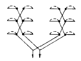
- 5.82
- 6.74
- 7.85
- 23.28
(정답률: 46%)
44. 주간에 전리현상을 활발하게 하여 전리층의 전자 밀도가 크게 되는 원인은 ?
- 자외선
- 반사, 굴절
- 자기장
- 간섭
(정답률: 알수없음)
45. 다음 도파관창 중에서 LC 병렬 회로로 볼 수 있는 것은 ?
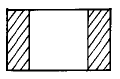
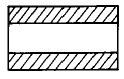
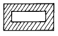
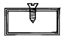
(정답률: 37%)
46. 복사저항이 36[Ω], 접지저항이 14[Ω]인 안테나에 1KW의 전력이 공급되고 있을때 복사전력은 ? (단, 여기서 다른 손실 무시한다.)
- 350 [W]
- 390 [W]
- 720 [W]
- 1000 [W]
(정답률: 알수없음)
47. 100[m]의 수직접지 공중선이 750[㎑]의 주파수로 20[KW] 의 전력을 복사할때 20[㎞]떨어진 지점의 전계 강도는 ?
- 70 [mv/m]
- 49 [mv/m]
- 35 [mv/m]
- 25 [mv/m]
(정답률: 30%)
48. 태양에서 발생하는 자외선의 돌발적 증가로 인하여 발생되는 전파방해는 ?
- 에코우(echo)
- 록셈부르코 효과(luxemburg effect)
- 델린저 현상(dellinger effect)
- 자기람(magnetic storm)
(정답률: 80%)
49. 자유공간의 파동 임피던스를 나타내는 것중에서 틀린 것은? (단, ε 은 유전율, μ 는 투자율, E는 전계, H는 자계로서 자유공간의 값이라 한다.)
- 120π [Ω]
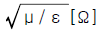
- E/H [Ω]
- μH2[Ω]
(정답률: 40%)
50. 단파안테나는 장파안테나에 비해 다음과 같은 특성이 있다. 틀린 것은 ?
- 발사하려는 파장과 같은 고유파장의 안테나를 얻기 쉽다.
- 광대역성을 얻기 쉽다.
- 복사효율이 좋다.
- 안테나의 높이가 높을수록 특성이 우수해 진다.
(정답률: 알수없음)
51. 지표면으로부터 전리층을 향하여 수직으로 펄스파를 발사한 후 0.0004초에 반사파를 확인했다. 어느 층에서 반사 되었는가?
- D층
- E층
- F1층
- F2층
(정답률: 46%)
52. 송신안테나(반파장 안테나)로부터 수신점의 전계강도는 ?
- 거리의 3승에 반비례한다.
- 거리의 제곱에 반비례한다.
- 거리에 반비례한다.
- 거리의 평방근에 반비례한다.
(정답률: 32%)
53. 다음의 비동조급전에 대한 설명 중 옳은 것은?
- 송신기와 안테나 사이의 거리가 가까울수록 많이 사용한다.
- 급전선의 길이는 사용파장과 특별한 관계가 없으므로 충분히 길게할 수 있다.
- 임피던스 정합장치를 사용하지 않으므로 정재파가 급전된다.
- 전송효율이 나쁜 것이 단점이다.
(정답률: 55%)
54. 특성 임피이던스가 50[Ω]인 선로에 부하를 걸어줄 때 전압 정재파의 실효치의 최대치는 50[V] 최소치가 20[V]이다. 정재파비는 얼마인가?
- 0.4
- 5
- 6.25
- 2.5
(정답률: 43%)
55. 다음중에서 주로 단파대에서 사용되지 않는 안테나는 ?
- Rhombic Antenna
- Fish bone Antenna
- Wave Antenna
- Zeppeline Antenna
(정답률: 알수없음)
56. 파라볼라안테나(parabolic Antenna)의 특징 설명중 잘못된 것은 ?
- 비교적 소형이고, 구조가 간단하다.
- 지향성이 예리하고 이득이 높다.
- 부엽(Side lobe)이 비교적 적다.
- 광대역 임피이던스 정합이 어렵다.
(정답률: 알수없음)
57. 단파대에서 제1종 감쇠의 설명으로 맞는 것은 ?
- E층의 전자밀도가 클수록, 주파수가 낮을수록 크다.
- E층의 전자밀도와 주파수가 클수록 크다.
- E층의 전자밀도와 주파수가 낮을수록 크다.
- E층의 전자밀도가 작을수록, 주파수가 클수록 크다.
(정답률: 알수없음)
58. 반사기에 관한 설명으로 옳지 못한 것은 ?
- 평면 반사판을 설치하면 이득이 2배만큼 증가한다.
- 야기 안테나에서의 반사기는 유도성이다.
- 코너 리플렉터(corner reflector)일 때 반사판 사이의 각이 좁을수록 이득이 크다.
- 반사기를 설치하면 단향성이 된다.
(정답률: 16%)
59. 위성통신용 안테나로 가장 적당한 것은 ?
- 대수주기(Log periodic) 안테나
- 롬빅(Rhombic) 안테나
- 카세그레인(Cassegrain) 안테나
- 수퍼게인(Supergain) 안테나
(정답률: 50%)
60. 대류권 산란파의 특징이 아닌것은 ?
- 지리적(대지)조건의 영향을 받지 않는다.
- 가시거리외 통신이 가능하다.
- 전파 손실은 자유공간 전파에 비해 매우 크다.
- 지향성이 예민한 공중선을 사용하여야 한다.
(정답률: 10%)
4과목: 전자계산기 일반 및 무선설비기준
61. 전파형식의 표기에서 단측파대의 전반송파/ 아날로그정보로된 단일채널 / 전화(음성방송 포함)를 올바르게 나타낸 것은?
- A3E
- H3E
- B3E
- R3E
(정답률: 알수없음)
62. (01001101)2 의 1의 보수는?
- (10110010)2
- (01001110)2
- (11001101)2
- (10110011)2
(정답률: 알수없음)
63. 공중선계의 조건으로서 충족하지 못한 것은?
- 이득이 높고 능률이 좋을 것
- 정합이 충분할 것
- 만족스러운 지향성을 얻을 수 있을 것
- 주복사 각도의 폭이 충분히 클 것
(정답률: 59%)
64. 다음 중 정보의 개념을 하위 개념에서 부터 상위 개념으로 나열한 것은?
- 필드(Field) → 레코드(Record) → 파일(File) → 문자(Character)
- 레코드(Record) → 파일(File) → 필드(Field) → 문자(Character)
- 문자(Character) → 필드(Field) → 레코드(Record) → 파일(File)
- 파일(File) → 문자(Character) → 필드(Field) → 레코드(Record)
(정답률: 50%)
65. 공중선전력의 허용편차로 틀린 것은?
- 비상위치지시용 무선표지설비 : 상한 20%, 하한 50%
- 초단파방송을 행하는 방송국의 송신설비 : 상한 10%, 하한 20%
- 표준방송을 행하는 방송국의 송신설비 : 상한 5%, 하한 10%
- 디지털텔레비젼방송국의 송신설비: 상한 5%, 하한 5%
(정답률: 알수없음)
66. 다음중 형식등록대상기기에 해당하지 않는 것은?
- 이동가입무선전화장치
- 비상위치지시용 무선표지설비
- 간이무선국용 무선설비의 기기
- 특정소출력무선국용 무선설비의 기기
(정답률: 20%)
67. 88㎒ 내지 108㎒의 주파수의 전파를 이용하여 음성을 보내는 방송의 용어는?
- 표준방송
- 초단파방송
- 텔레비전방송
- 데이터방송
(정답률: 알수없음)
68. 다음중 무선설비의 형식검정업무를 취급하는 기관은?
- 체신청
- 전파연구소
- 중앙전파관리소
- 한국무선국관리사업단
(정답률: 34%)
69. 산업용 전파응용설비에서 사용하는 고주파출력은 몇 W를 초과하는 것을 말하는가?
- 10 W 초과
- 50 W 초과
- 100 W 초과
- 500 W 초과
(정답률: 29%)
70. 다음중 인터럽트(interrupt)가 발생되지 않는 경우는 어느 것인가?
- 오퍼레이터의 필요시 콘솔인터럽트 key 조작에 의해 자료를 입력하여, 현재 수행되는 프로세서를 제어할 때
- 연산결과 오버플로(overflow)가 발생했을 경우 또는 0으로 나누었을 경우
- 입출력장치의 착오에 의하여 오류가 발생하는 경우
- 인덱스 주소방식에 의해 메모리의 자료를 다른 영역의 메모리에 이동시킬 때
(정답률: 75%)
71. 순서도의 작성 시기는?
- 입.출력 설계 후
- 타당성 조사 후
- 프로그램 코딩 후
- 자료 입력 후
(정답률: 알수없음)
72. 전자파 적합등록을 하여야 할 전자파 장해기기 및 전자파로부터 영향을 받는 기기에 해당하지 않는 것은?
- 산업, 과학 또는 의료용 등으로 사용돠는 고주파이용기기류
- 방송수신기기류
- 수출용 CATV용 무선 설비기기류
- 자동차 및 불꽃점화 엔진구동기기류
(정답률: 알수없음)
73. 다음 중 전자계산기 중앙처리장치의 구성요소가 아닌 것은?
- 주기억장치
- 제어장치
- 연산장치
- 전원장치
(정답률: 91%)
74. 다음에서 접근 속도(access time)가 빠른 순서로 나열된 것은?
- 자기코어 - 자기디스크 - 자기드럼
- 자기버블 - 캐시 - 자기디스크
- 자기코어 - 캐시 - 자기디스크
- 캐시 - 자기코어 - 자기드럼
(정답률: 42%)
75. 오퍼레이팅 시스템의 성능 평가중 데이터 처리를 위하여 시스템이 필요하게 되었을 때 시스템을 어느 정도 빨리 사용할 수 있는가를 나타내는 것은?
- 처리능력
- 응답시간
- 사용가능도
- 신뢰도
(정답률: 24%)
76. 프로그램 카운터가 명령 번지 부분과 더해져서 유효 번지가 결정되는 주소지정 방식은?
- 상대 번지 모드
- 간접 번지 모드
- 인덱스 번지 모드
- 베이스 레지스터 번지 모드
(정답률: 알수없음)
77. 다음중 무선국의 개설허가심사 사항으로 틀린 것은?
- 주파수 지정이 가능한지의 여부
- 정보통신부령이 정하는 설치장소에 적합한지의 여부
- 설치,운영할 무선설비가 기술기준에 적합한지의 여부
- 무선종사자의 자격,정원,배치기준이 적합한지의 여부
(정답률: 알수없음)
78. A3E 전파형식을 사용하는 방송국 송신설비의 공중선전력은 무엇으로 표시하는가?
- 평균전력
- 반송파전력
- 첨두포락선전력
- 규격전력
(정답률: 9%)
79. 자료의 외부적 표현방식인 EBCDIC 코드로 표현할 수 있는 최대 문자수는 ?
- 36자
- 120자
- 256자
- 282자
(정답률: 알수없음)
80. 다음중 도형이나 사진 등을 기억장치로 읽어들일 수 있는 장치는 ?
- keyboard
- scanner
- mouse
- OCR
(정답률: 60%)